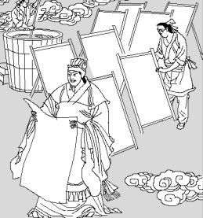
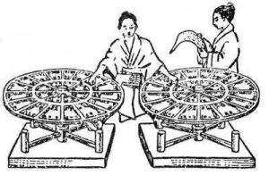
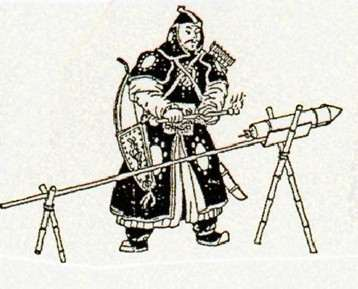
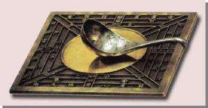

2007年，英国《独立报》评出了改变世界的101个发明。中国的四大发明：造纸术、印刷术、指南针、火药及另一发明算盘赫然在列。本文着重介绍中国古代四大发明。
造纸术

西汉初年我国发明了造纸术。1986年，甘肃天水放马滩出土的汉景帝时的纸，是迄今所知最早的纸。公元105年，东汉蔡伦改进了造纸术，称“蔡侯纸”。造纸术是书写材料的一次伟大革命。
蔡伦字敬仲，桂阳人也。……伦有才学，尽心敦慎，数犯严颜，匡弼得失。……伦乃造意，用树肤、麻头及敝布、鱼网以为纸。元兴元年奏上之，帝善其能，自是莫不从用焉，故天下咸称“蔡侯纸”。 ──《后汉书·蔡伦传》
印刷术

隋唐时出现了雕版印刷。868年印制的《金刚经》是世界上现存最早的雕版印刷品。11世纪初，北宋平民毕升发明活字印刷术，比欧洲发明早四个多世纪。东传朝鲜、日本，西传埃及、欧洲，印刷术的发明，对人类文化的传播和保存，是一个重大贡献。
宋元时期，我国已有套色印刷技术。山西应县木塔内，发现了辽代的红、黄、蓝三色佛像版画，这是目前发现的我国最早的雕版彩色套印印刷品。
《梦溪笔谈》中关于毕升的记载
转轮排字（元朝科学家王桢发明转轮排字盘。排版时，只要转动放活字的轮盘，就可以拣出要用的字）（毕升的活字印刷）若止印三二本，未为简易；若印数十百千本，则极为神速。 ──沈括《梦溪笔谈》
火药

我国古代炼丹家发明，唐中期书籍记载了制成火药的方法。唐末运用于军事。南宋时发明“突火枪”，13世纪传入阿拉伯和欧洲。火药的发明和传播，改变了中世纪的战争模式，是军事上划时代的一件大事。
指南针

战国时人们制作出指示方向的仪器“司南”，后来用磁石指南原理制成指南针。北宋指南针运用于航海。13世纪传入阿拉伯和欧洲。指南针的发明和传播，为欧洲航海家探索新航路提供了重要条件。